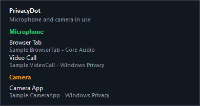

For the Windows notification area
A small dot.
A clearer picture.
See which apps are using your microphone and camera, right from your Windows tray.
A color for detected activity. One click for the apps and devices behind it.
Free · MIT licensed · No administrator privileges required
Requires .NET Framework 4.8. Compatibility and installer details
Meet your new tray indicator
Microphone + camera detected
Interactive illustration. This website does not access your devices.
Less hunting through settings.
More knowing at a glance.
Keep an eye on detected activity between calls, while streaming, or whenever several microphones and cameras are connected.
One click closer
The app.
The device.
The useful detail.
Click the dot to open a view of detected microphone and camera activity. Apps appear under the device they use, so your headset and USB mic each get their own place.
If Windows cannot identify a device, PrivacyDot labels it Device not identified. It doesn't guess the default.

At home in Windows.
Light and dark themes follow your Windows app theme. Start with Windows if you choose, then keep the indicator close to the clock.
In your language.
English, French, Spanish, Japanese, Simplified Chinese, Hindi, Arabic, and Russian. Follow your system language or choose your own.
Open to inspection.
Free software under the MIT License. Read the C# source, report a reproducible issue, or help improve device detection.
Your activity stays yours
Local observation.
No usage uploads.
PrivacyDot reads activity metadata from Windows. It does not open a camera, capture frames, or record audio.
There is no telemetry, and device-usage data is not sent anywhere. The app contacts GitHub for startup and manual update checks. Downloading an update requires your confirmation.
Detection is best-effort and depends on Windows and your drivers. PrivacyDot is an activity indicator, not a permission blocker or a guarantee against hidden recording.
Read the privacy detailsBefore you install
A few practical details.
Which versions of Windows does it support?
PrivacyDot targets Windows 7 SP1 and newer with .NET Framework 4.8. Detection capabilities vary. Per-camera attribution requires Windows 10 version 1703 or newer and the sensor activity monitor; older Windows versions have limited camera detection.
How do I install it?
Download PrivacyDotSetup.exe from the official GitHub release and run it. It installs to your local app data folder, creates Start Menu and Startup shortcuts, checks for .NET Framework 4.8, and launches the app. Administrator privileges are not required. You can change startup behavior in Settings.
The current release is unsigned and Windows may show a publisher warning. Review the source and release information before deciding to run it.
Does a gray dot mean nothing is recording?
Gray means no microphone or camera activity was detected through the available Windows sources. It cannot prove that every capture path is inactive.
Can it block an app from using my devices?
Temporary per-app permission revocation is not currently available. Use the app's own controls or Windows privacy settings. PrivacyDot can force quit eligible matching app processes after a second confirmation; this can close multiple windows and lose unsaved work.
What if a device or app is missing?
Detection depends on Windows, the capture path, and the driver. Please report a reproducible issue with your Windows version and device details. Remove private information before posting diagnostics.
Keep the dot.
Know what's detected.
Free, open-source microphone and camera visibility for Windows.